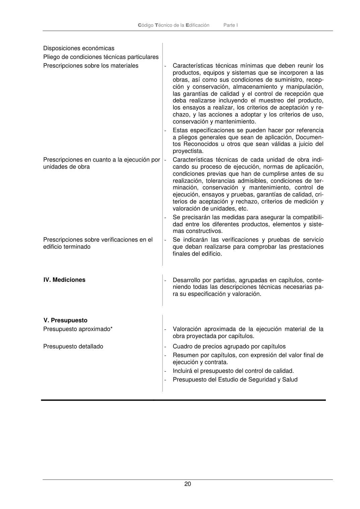

Parte I · edición 2022-06-14 · capa oficial
Documento PARTE-I-oficial · SHA-256 del PDF eaed39b98fbe715e9db817ab9bde93a5031c3d2c07440dd6a8653572b053a07f
Página física 20 de 27.
Copia fiel del PDF fuente · Fuente oficial
Ficha de la disposición en la fuente oficial
Formato: Texto de la página (Markdown)
Código Técnico de la Edificación Parte I 20 Disposiciones económicas Pliego de condiciones técnicas particulares Prescripciones sobre los materiales - Características técnicas mínimas que deben reunir los productos, equipos y sistemas que se incorporen a las obras, así como sus condiciones de suministro, recep- ción y conservación, almacenamiento y manipulación, las garantías de calidad y el control de recepción que deba realizarse incluyendo el muestreo del producto, los ensayos a realizar, los criterios de aceptación y re- chazo, y las acciones a adoptar y los criterios de uso, conservación y mantenimiento. - Estas especificaciones se pueden hacer por referencia a pliegos generales que sean de aplicación, Documen- tos Reconocidos u otros que sean válidas a juicio del proyectista. Prescripciones en cuanto a la ejecución por unidades de obra - Características técnicas de cada unidad de obra indi- cando su proceso de ejecución, normas de aplicación, condiciones previas que han de cumplirse antes de su realización, tolerancias admisibles, condiciones de ter- minación, conservación y mantenimiento, control de ejecución, ensayos y pruebas, garantías de calidad, cri- terios de aceptación y rechazo, criterios de medición y valoración de unidades, etc. - Se precisarán las medidas para asegurar la compatibili- dad entre los diferentes productos, elementos y siste- mas constructivos. Prescripciones sobre verificaciones en el edificio terminado - Se indicarán las verificaciones y pruebas de servicio que deban realizarse para comprobar las prestaciones finales del edificio. IV. Mediciones - Desarrollo por partidas, agrupadas en capítulos, conte- niendo todas las descripciones técnicas necesarias pa- ra su especificación y valoración. V. Presupuesto Presupuesto aproximado* - Valoración aproximada de la ejecución material de la obra proyectada por capítulos. Presupuesto detallado - Cuadro de precios agrupado por capítulos - Resumen por capítulos, con expresión del valor final de ejecución y contrata. - Incluirá el presupuesto del control de calidad. - Presupuesto del Estudio de Seguridad y Salud
